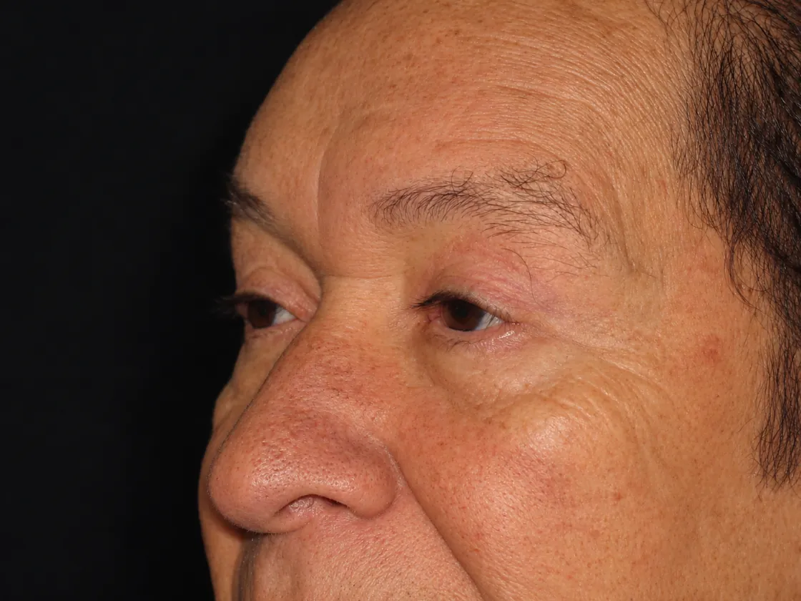

¿En qué consiste?
Es una intervención sobre los párpados superiores, los inferiores o ambos. A través de incisiones situadas en los pliegues naturales se elimina el exceso de piel y se trata la grasa que forma las bolsas. En algunos casos se combina con un lifting temporal para elevar la cola de la ceja.
Presupuesto individualizado. Depende de la técnica, la anestesia y el formato. Lo recibirás por escrito después de tu valoración médica.
¿Para quién está indicado?
- Personas con exceso de piel en el párpado superior que pesa o cubre el pliegue.
- Bolsas en el párpado inferior que dan aspecto de cansancio.
- Pacientes con buena salud general y expectativas realistas.
- En algunos casos, cuando el exceso de piel llega a limitar el campo visual.
Beneficios y objetivos
- Mirada más abierta y descansada.
- Cicatrices ocultas en los pliegues naturales del párpado.
- Resultado duradero cuando la indicación es correcta.
- Se puede realizar de forma ambulatoria en la mayoría de los casos.
Antes y después

Casos reales publicados con autorización expresa del paciente. Los resultados varían en cada persona.
Recuperación y cuidados
Los primeros días son normales la inflamación y los hematomas leves alrededor de los ojos. Se recomiendan frío local, reposo relativo y evitar esfuerzos. Los puntos suelen retirarse en la primera semana y la mayoría de pacientes retoma su vida social en 10 a 14 días.
Preguntas frecuentes
¿Quedan cicatrices visibles?
Las incisiones se sitúan en el pliegue del párpado superior y junto a las pestañas o por dentro del párpado inferior, por lo que suelen quedar muy disimuladas.
¿Puedo hacer superior e inferior a la vez?
Sí. Es una de las variantes que realizamos. La indicación se decide en la valoración médica.
¿Cuánto cuesta?
El presupuesto es individual y se entrega después de la valoración, porque depende de la técnica, los párpados tratados y el tipo de anestesia.